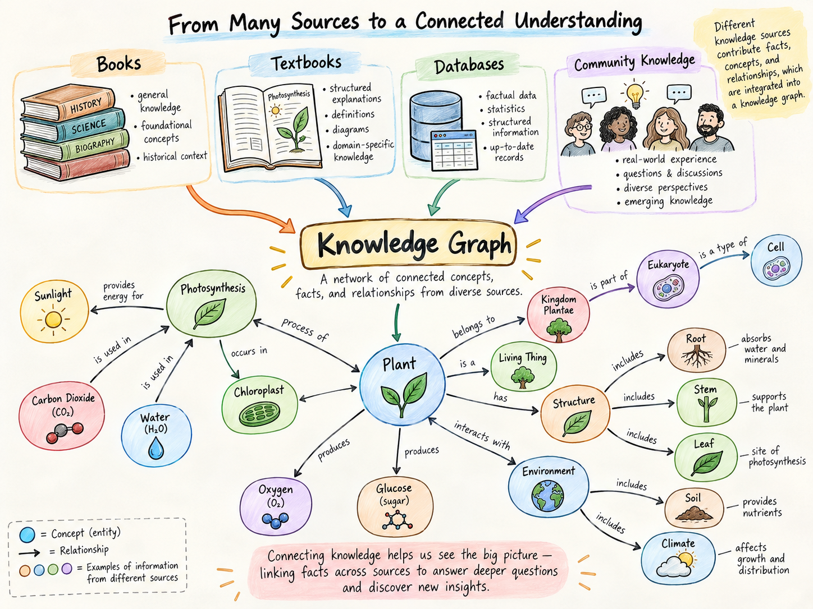

GRM-1872-BIO-014
หมวด: ธรรมชาติ & วิทยาศาสตร์

พฤกษศาสตร์ไทย: จากตำราใบลานสู่นาโนสารสกัด
สำรวจการเดินทางของพืชสมุนไพรไทย จากจารึกวัดโพธิ์สู่การวิเคราะห์พันธุศาสตร์พืชและสารพฤกษเคมีต้านอนุมูลอิสระ
💡 Everyday Takeaway:
สูตรโภชนาการพืชผักตามฤดูกาล เสริมสารต้านอนุมูลอิสระและภูมิคุ้มกันตามหลักชีวเคมีสมัยใหม่
🔎 เจาะลึกโครงข่ายความรู้นี้